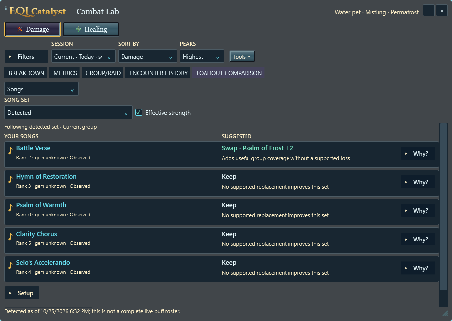
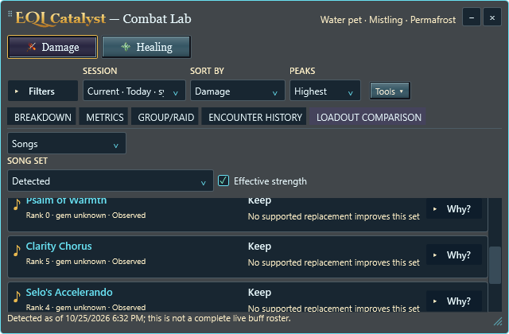
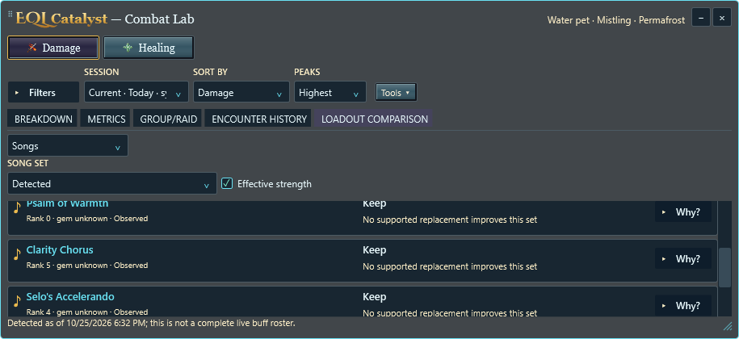
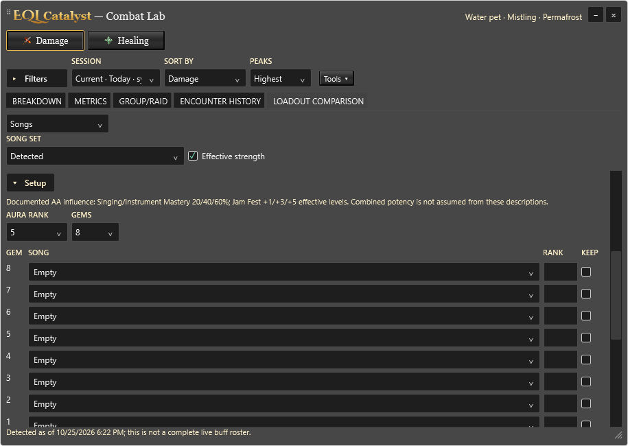

Actual Windows controls with synthetic evidence. Your songs appear on the left; supported Keep/Swap results appear on the right. Detection, common sets and reviewed setup remain separate.




Three themes, 100–300% synthetic rendering, keyboard focus and scrolling are checked at the end of the adjustment. Physical multi-monitor and live-game acceptance are separate.
Help and evidence rules